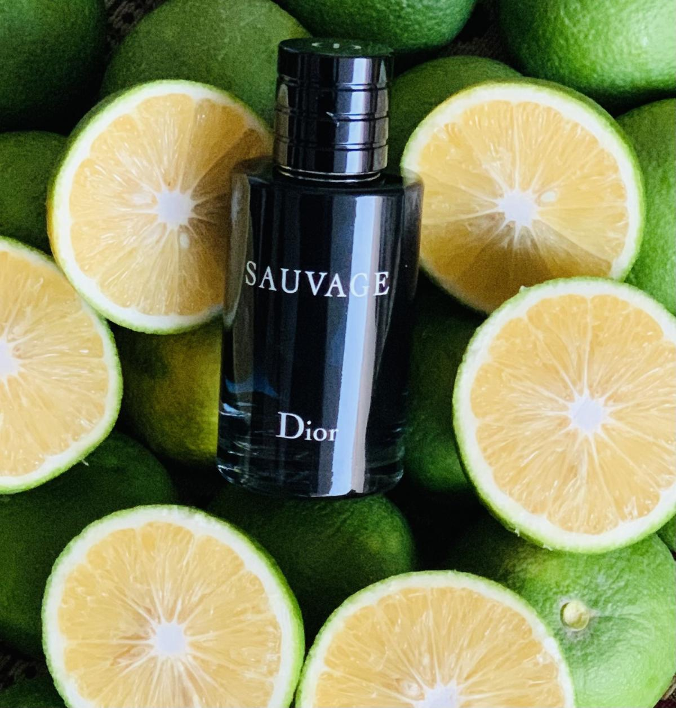
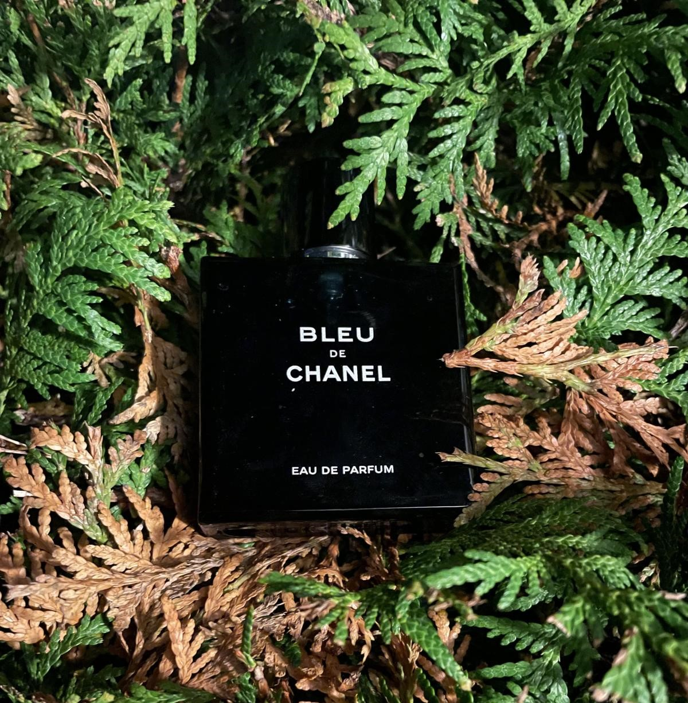

Designer
Big-name fashion houses such as Dior and Chanel are considered designers in the fragrance world. These mainstream brands are often shopped in the mayor boutiques and stores.
 
These fashion houses(car brands, cosmetics etc.) make other products along side with fragrances such as: watches, cosmetics, clothes, shoes, accesories. These products are produced at a much bigger scale and are more well-known to the general population. Even though designers lack so to speak, the “luxury“, they excel on availability, price, and popularity which shouldn’t be ignored. Mainstream fragrances are produced in the biggest fragrance factories which guarantee control quality which sometimes, may be absent in a niche world. In the fragrance community, designers are often named “gateway drug” which hooks you into this hobby.
Niche
Companies that sell fragrances exclusively are niche brands. These companies sell their products to a specialized sub-market that satisfies specific needs, often with bigger price tags.
Unlike the designers, which attract a much bigger population, a niche audience is smaller and more demanding.
Brands such as Amouage and Frederic Malle are great examples of what a niche fragrance company is. They are commonly not present in most retail stores, their price is often higher and offers exclusivity.
One of the things which are still present in a niche world is artistic expression and creativity. Which means they are at a danger of being not accepted by its target population.
Indie Brands: A New Alternative
One of the good things about small distribution is the ability to avoid IFRA regulations. This way, the fragrance users are able to experience banned or limited notes in their natural way.
Here are some indie brands to check out:
1. Kerosene
2. Bortnikoff
3. Gallagher Fragrances
4. Slumberhouse
5. Imaginary Authors
6. Rouge Perfumery
Layering perfumes
Layering perfume means that you spray multiple fragrances on you, that have the same base notes and different top and middle notes, to obtain a unique scent.
It is often used to create a signature scent.
How to apply perfume correctly
I call it "the holy trinity", basically you spray once behind each ear and behind your neck, this makes your fragrance noticeable for the others when you walk up into a room; if you are going out or you just want to smell stronger spray one time on each of your shoudlers(on the clothes); if you want to be able to feel your fragrance too throughout the day spray it on your neck too. Indeed you are going to get used to the smell and you will get the impression that it doesn't last.
All these things are based on the performance of the perfume, the sillage and longevity.
Why do you need one for each type of weather?
The answer is simple, winter fragrances for example have a heavier scent that was made for it's best performance in cold weather. Heat causes fragrances to evaporate faster and project farther. If a fragrance is heavy and strong in the summer it can be overwhelming so most people consider them winter fragrances. Summer fragrances are lighter, more fresh and floral, they tend to get muted by colder weather.
Indeed there are fragrances versatile that you can use in any season and ocassion so you don't have to buy multiple perfumes. Having a collection is a choice and it is expensive especially if you are more into niche.
*Tip:Avoid dodgy sites.
Absolute. Strongest aromatic material extracted from flowers and plants. They are concentrated highly aromatic oily mixtures extracted from plants. Absolutes require the use of solvent extraction techniques, or more traditionally, enfleurage.
Accord.Blend of two or more notes that form a distinct fragrance
Aldehydes.Organic compound present in many natural materials can be synthesised artifically
Amber.Sweet resinous,cosy and warm, often rather powdery note recreated from a mix of balsams. Usually labdanum, benzoin,vanilla, styrax and fir or a combination of these. The default oriental note. (Definition from Fragrantica odour profile)
Ambroxan/Ambroxide. Ambroxide, widely known by the brand name Ambroxan is a naturally-occurring terpenoid and one of the key constituents responsible for the odour of Ambergris
Animalic. Aromas mostly associated with musk, civet and castoreum. Now usually reproduced synthetically
Aoud. Arabic word for wood in perfume, usually refers to wood from agar trees. Oud or agar is the resin extracted from agarwood which is the infected heartwood of aquilaria trees.
Aphrodisiac scents. Scents reputed to make a person sexually attractive to another person.
Aquatics A scent reminiscent of water but not overtly or heavily marine/oceanic. Example : rainwater. Aquatics are often ozonic and typically feature notes of water lily, water hyacinths, lotus, melon, cucumber and water.
Aroma. A sensation which is between smell and taste.
Aromachemical Molecules obtained from natural products or made synthetically that have an aroma. Most synthetic aromachemicals are identical to those found in nature.
Aromatic. Scents that have a freshness to them. Aromatic notes are usually a combination of sage, rosemary, cumin, lavender and other plants that have intensive grassy spiciness. They are often combined with citrus and spicy notes (as per Fragrantica olfactory groups definition)
Attar. Essential oil obtained by distillation from botanical sources; example: roses.
Balsamic. Warm, ambery, soft like benzoin, tolu balsam.
Base Notes. Most enduring notes, the heaviest notes longest lasting.
Batch Codes. Quantity of in this case perfumes produced in a single run. Some perfumes scent may vary depending on the batch code.
Beast Mode. A perfume that's powerful, forceful.
Bergamot. Oil from the inedible bergamot orange, used in perfumery.
Benzoin. Balsamic resin from styrax tree.
Blind buy. Purchase a perfume without ever having smelled it before.
Blend. Harmonious mix of perfume ingredients.
Boozy. A description for perfume that may smell of various alcoholic drinks like rum, whiskey, vodka, wine etc.
Cheapie. Inexpensive perfume.
Complex fragrance. Scent that changes over time, from the top notes to basenotes, non linear.
Compound. Completed perfume formula ready to be used in a product.
Decant. To siphon, discharge or transfer perfume from the original bottle to a decant vial. They are generally 3/5/10/30 mls size. Useful cheaper option to try an expensive fragrance.
Discontinued. Perfume no longer in production. These perfumes may be hard to find and as such may be expensive.
Dupe. Copy or knockoff version of an original fragrance. Could also be an original fragrance that bears an uncanny resemblance to another.
EDC. Eau de cologne 2-5% perfume oil least concentrated.
EDT. Eau de Toilette 3-15% perfume compound.
EDP. Eau de Parfum 10-15% perfume oil heaviest of eau's.
Esprit de Parfum (ESdP). 15-30% aromatic compounds, a seldom used strength concentration in between edp and perfume.
Extrait. Extract of perfume that has 15-45% compound in an alcohol base.
Exclusives / Exclusifs. Refers to special lines from particular houses for example Chanel Les Exclusifs.
Olfactory fatigue. Temporary but normal inability to pick up a particular smell after being exposed to it for a long time. Removing exposure for a time will usually result in being able to smell it again.
Panty-dropper. Controversial term sometimes used to ascertain a scents aphrodisiac performance.
Pure Parfum. Highest concentration of oils in perfume.
Vivaldi. A perfume or cologne suited to all seasons.
Maceration is also known as the process of oxidising your fragrance. This enables the alcohol in your new bottle of perfume to evaporate. Often, perfume houses will macerate alcohol based scents in their factories and this is a controlled procedure carried out by themselves. But once in a while, certain perfumes may require just a little bit more maceration.
How to Macerate your Fragrance
Macerating your perfume is not as complicated as it sounds, and there’s no art or learning curve to it. When you’ve opened a new bottle of perfume and upon spritzing it on, and you’re not satisfied that the fragrance is coming through fully, this is time for you to macerate your perfume.
Don’t put that bottle back. Continue to pump out 5 to 10 pumps into the air, making sure you’re fully pressing on the nozzle. All you have to do after this step is to close the bottle and place it back in the original box. The next thing you have to do is to store the perfume in the box in a cool and dry place for 1 month. Make sure you’re keeping it away from any sunlight. The back of a cabinet or drawer in your bedroom is an ideal place to store your perfume that’s macerating. Don’t leave it in the bathroom as the hot and humid air is not ideal for perfumes. If you’re able to place the fragrance in a cabinet or drawer that you don’t open often, that’s even better. Over the period of 1 month, the scent will get stronger and darken slightly in colour, giving you the ideal fragrance you’re after.